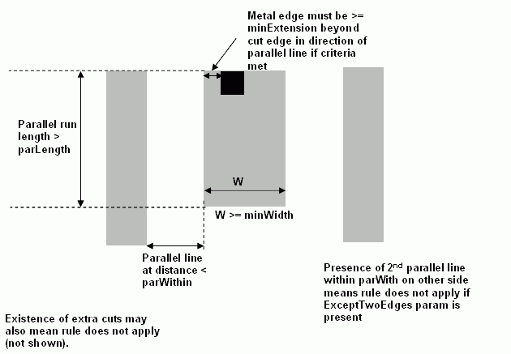

|
 |
 |
||||||
|
|
|
||||||
This constraint specifies the extension of one layer (typically, a metal layer) past another layer (typically a cut layer). The specified extension is typically larger than the oacMinExtension or oacMinDualExtension values. This larger minExtension value is required only if the following conditions are met:
| Constraint type: | oaLayerPairConstraint (Symmetric: no) |
| Value types: | oaIntValue |
| Database types: | oaDesign, oaTech |
| Object types: | oaAppObject |
The following value types are supported by this constraint:
This value specifies the minimum extension in database units.
Units: DBU
The following parameters are supported by this constraint:
| Name | Value Type | Units | Default | Description |
|---|---|---|---|---|
| width oacWidthConstraintParamType |
oaIntValue | DBU | (Required) |
This parameter defines the minimum width in database units |
| cutClass oacCutClassConstraintParamType |
oaDualIntValue | DBU | None |
This oaDualIntValue parameter refers to the viaWidth and viaLength dimensions of appropriate cut class. |
| parallelEdgeLength oacParallelEdgeLengthConstraintParamType |
oaIntValue | DBU | (Required) |
This oaIntValue is used to store the parLength value. |
| parallelEdgeWithin oacParallelEdgeWithinConstraintParamType |
oaIntValue | DBU | (Required) |
This parameter is used to store the parWithin value |
| exceptExtraCut oacExceptExtraCutConstraintParamType |
oaBooleanValue | Boolean | False |
This parameter is set to true if an extra cut means that this rule can be igored. |
| oaDistanceWithin oacDistanceWithinConstraintParamType |
oaIntValue | DBU | None |
This parameter is used to store the cutWithin value which exists only when the exceptExtraCut parameter is specified. |
| exceptTwoEdges oacExceptTwoEdgesConstraintParamType |
oaBooleanValue | Boolean | False |
If set to true, it means that the rule does not apply if there are parallel edges that meet the criteria described above on either side of the metal enclosing the cut. |

Copyright 2002 - 2010 Cadence Design Systems, Inc.
All rights reserved.